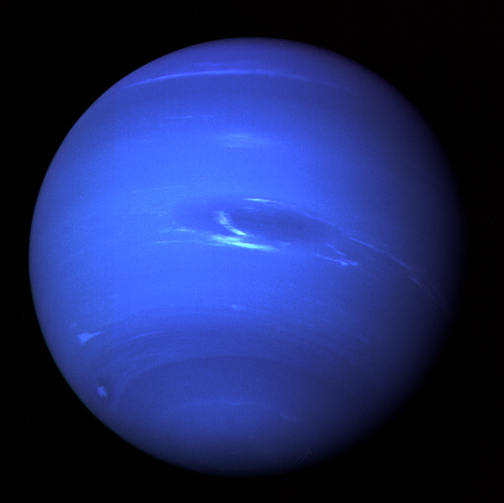

Általánosságban
A Neptunusz a Naptól számítva a nyolcadik, legkülső bolygó a Naprendszerben. Csillagrendszerünk négy óriásbolygója közül a méretét tekintve az utolsó, a tömegét nézve viszont az Uránuszt megelőzve a harmadik legnagyobb. Színe miatt Neptunusról, a tengerek római istenéről nevezték el. Jele az isten háromágú szigonyát jelképezi. 14 ismert holdja van, ezek közül a két ismertebb a Nereida és a Triton.
Belső szerkezete
A Neptunusz belső felépítése hasonló az Uránuszéhoz. Légköre a bolygó teljes tömegének 5-10%-át teszi ki, vastagsága pedig 10-20%-a lehet a bolygó sugarának. A légkörtől mélyebben egy vízben, ammóniában és metánban gazdag köpeny helyezkedik el, aminek tömege 10-15-szöröse a Föld tömegének. Itt a hőmérséklet 2000-5000 K, a nyomás pedig a föld felszíni nyomásának több tízmilliószorosa. Ilyen körülmények közt a molekulák atomokra szakadnak és a szén gyémánttá áll össze, ami ekkora nyomáson és hőmérsékleten megolvad. Ez magyarázattal szolgálhat a Neptunusz szokatlan mágneses terére. A bolygó belsejében egy viszonylag kicsi, vasból, nikkelből és szilikátokból álló mag található, amelynek tömege körülbelül megegyezik a Földével. Itt a nyomás eléri a 700 GPa-t, a hőmérséklet pedig az 5400 kelvint.

Keringése
A Neptunusz átlagos keringési távolsága 4,5 milliárd km (30,1 CsE), egy teljes fordulatot 164,79 év alatt tesz meg a Nap körül.[4] Pályájának excentricitása 0,00858587, keringési síkja 1,77°-os szöget zár be az ekliptikával. Tengelyferdesége 28,32°, ami hasonló a Föld, vagy a Mars tengelyferdeségéhez, így a két bolygóhoz hasonló évszakai is vannak, habár ezek a hosszú keringési idő miatt jóval hosszabbak, mint a Földön vagy a Marson. Sziderikus forgási periódusa 15,97 óra, de a többi gázbolygóhoz hasonlóan a különböző szélességi körökön eltérő idő alatt fordul meg. Az egyenlítői régiókban 18 óráig tart egy nap, míg a sarkvidékeken csak 12 óráig. Keringési rezonanciában van a Pluto törpebolygóval: Míg a Neptunusz háromszor kerüli meg a Napot, addig a Pluto kétszer.